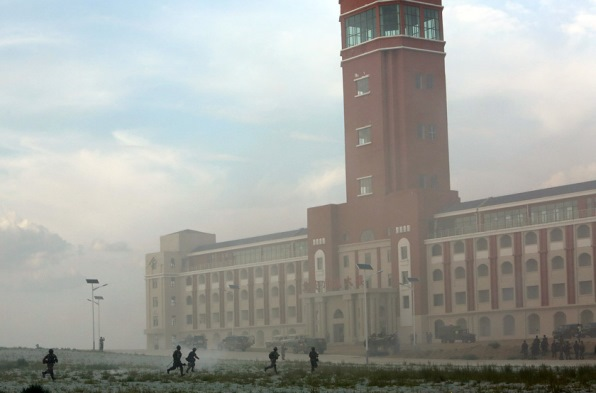

【陆军】【海军】共军小道消息刷新（2015年第三季）
2015-08-02 20:23:00
原文网址：https://blog.udn.com/MengyuanWang/108908757
转眼又过了三个月，又是总结共军新发展的时候了。本季在空军方面比较沉静，J-20没有新的原型机出现；SU-35的谈判也没有下落，看来会无疾而终的可能性已经上升到50%。我个人认为共军为了省几个小钱而丧失观摩俄国最新实用部署技术的机会，是因小失大的。不过有小道消息指出，中共自己的WS-10太行系列涡扇引擎已经实用化，可靠性大幅提高，而且新改型层出不穷，反而让飞机制造商（主要是成飞）心存观望；或许这使得SU-35所用的117S引擎相形见绌（参见前文《共军小道消息增补：Su-35》），才导致共军丧失了採购的热情。
C919客机的总装首飞又再度延误，现在预期最早要明年才有可能。或许有读者会觉得奇怪，C919不是要和Boeing 737以及AirBus 320竞争的客机吗？它和空军有什么关系？其实空军的预警机、反潜机和加油机都需要省油、长航时、高航速、密封机舱等等民航机的特徵，军用运输机的超大方形截面机舱和短场起降能力反而用不上，所以共军下一代的预警机、反潜机和加油机都在等C919和更下一代的C929（大型广体客机）来做载机，共军的新运输机Y-20反倒不合适。提起Y-20，有小道消息说试飞进展顺利，即将量產，不过确实的时程还不明朗。
既然空军没什么消息，这次就特别提提陆军吧。今年的朱日和演习正在进行之中，其模式和规则都大幅变更（参见去年此时的前文《习近平的军事改革和共军的实兵对抗》），去年的一战决胜负被改为三阶段的对战考验，其中最后一个阶段是巷战。共军为此还特别盖了一个小城区，基本复制台湾总统府附近的几条街。当共军衝击“总统府”的照片出现在媒体上时，台湾政坛和传媒才大吃一惊；民进党还特别警告中共“不要重蹈覆辙”，意即这是对台湾大选的威吓。其实这又是井底蛙以为宇宙环绕自己旋转的思考模式：他们心中只有大选，所以以为别人也是如此。事实上共军每年都有好几场针对台湾的演习，这次只是刚好有镜头上衝击力大的画面。朱日和演习今年不再由各大军区选派精锐部队，而是随机让二线步兵旅也有上场的机会，显然共军想要打破竞赛作秀的思维模式，要把演习落实为训练和研究的手段。这种务实的态度和台湾的造势文化形成极大的反差。
红军步兵“占领总统府”。
上个月另一则和台湾有关的中共陆军新闻是对面的南京军区完成全面换装PLZ-05自走榴弹炮。PLZ-05与德国的PzH-2000并列为世界最先进的155毫米自走火炮（参见前文《又见朱日和》），比美军和国军的M109先进一代，不但在精度和射速上都大幅超越，射程更达到100公里，远高于M109的30公里。请注意，南京军区的任务就是对台作战，所以这次的换装有特别的意义。PLZ-05是庞然大物，35吨的重量直逼南京军区所用的96A式坦克（42吨重，比99式轻不少，但是还是货真价实的现代主战坦克，可以轻易击败所有国军的战车），现在除了两栖步兵（共军是世界上唯一有两栖步兵师编制的陆军，都隶属南京军区，即第1和第124师）之外都装备了，显然共军对渡海作战的运输问题已经成竹在胸。我想Zubr级气垫运输舰（参见前文《中共海军的两栖攻撃舰》；中共自己开发的726型气垫艇虽然在2009年就下水，却只造了三艘，编号分别为3320、3321和3322。这很可能是因为重要部件有问题，尤其是燃气轮机，必须等到它改进成熟到适合实用的程度才能批量建造）一定让共军在试用后十分满意，基本解决了大量快速运送重型车辆越过台湾海峡的问题，所以可以放心地为两栖作战的第二梯次部队换装最先进的重装备。
南京军区第1集团军军属炮兵团的PLZ-05在演习中发射增程弹。
海军方面最大的新闻也和Zubr有关：共军的第一艘半潜运输舰868号在七月正式公开。半潜船原本是民用的特殊船只，用来运载超大型货物，例如船舰、潜艇、深海油井等等；美国的海军在2013年才接收了世界第一艘军用半潜舰，预计共建造五艘，称为Mobile Landing Platform（MLP），即6万吨的Montford Point级。共军的868号的用途和美军的相似，都是为了将车辆在海上转运到气垫艇上，但是它只有2万吨左右，应该是专为运作一艘Zubr而设计建造的。这是因为Zubr的航程太短，却又装不进传统的两栖攻击舰里，所以原本除了台海之外没有其他的用武之地。我猜想共军对Zubr很满意，觉得不能用在南海很可惜，所以试建了这艘半潜舰来延伸它的航程。不过Zubr并不是第一梯次两栖登陆用的抢滩气垫艇，而是为运输后续重装部队而设计的载具，所以在小岛攻防战用不上，只有全面战争的纵深攻击才有用；我不觉得当前中共对菲律宾或越南会有这样的需要（或许15年后突击琉球、东京或关岛会用得上吧），所以这艘868号很可能只是纯实验性的尝试，几年内应该都不会批量生產。
868号运载一艘Zubr的电视画面截图。
另外一个全新的两栖作战利器是AG-600型水陆两栖飞机，这将是世界最大的水陆两栖飞机，也在七月开始总装。水陆两栖飞机主要是民用的，尤其在森林灭火方面可以一次从水面捞起几吨的水再直飞到火场上空喷洒，所以中方并没有严格保密。在军事用途上主要是海上搜救和紧急运输补给，后者对没有机场的小岛特别重要，而南沙群岛正是适合使用大型长程水陆两栖飞机的地方。世界上只有中日两国还在研发大型水陆两栖飞机，这次中共算是占了上风。
AG-600型的总装典礼。
中共的元级潜艇在外销上也有了进展：除了巴基斯坦在上一季订了八艘高檔级版本之外，本季又有泰国来的三艘低檔版订单；后来虽然因为泰国本身的财政问题而暂停，但是很可能会在未来一年内重新启动。中共海军自己对元级并不满意，认为其噪音还是太大，不能保证对美日海军作战时的存活性，所以内销订单已经停滞了几年，想来下一代的AIP柴电潜艇正在紧锣密鼓的研制之中；不过美日刚好有世界最先进强大的反潜力量，巴基斯坦面对的印度要差两个檔次，泰国所面对的东南亚邻国更是完全不入流的，所以元级应该可以轻易胜任。
最后是几条短讯：共军已经开建几艘072A级LST传统登陆舰，用来替代移交给海警的三艘072级旧船。有消息肯定055级要到明年中期才会上船台。四万吨级全通甲板的新型LHD（073？）据说已经延迟到2017年才开建，那么也就是要到2018年才会上船台。054B全电力驱动远洋反潜护卫舰也一样延到2017年。不过055、073和054B都是达到或甚至超越美军水准的远洋舰艇，中共只要到2025年有足够数量就行了，一两年的延迟无伤大雅。现有的052D、071A和054A本身性价比都很高，继续建造也不会有落伍的问题；据说054A会建到32艘之多（参见前文《054A级护卫舰》），可见中共海军的规模在可见的未来还会持续扩张。
60 条留言
至于引擎，中方也早已在研制WS-20。这是WS-10的大飞机版本，在2020年前绝对可以量產。其性能应该还比Leap X1差一些，但是军用版的C919稍为费油一点并不要紧。所以一旦C919在2017年有原型机可以移交给军方，改装为预警机、反潜机和加油机的工作就可以马上开始。请注意，不准军用的规则，其重点在那个 “用”字。中共连把这些部件拆开来研究都必然会做，把装有进口引擎的C919的原型机用来做研发自然是不在话下。反正没有部署就不能确定其用途，也就不算违约。等到要量產了再换上WS-20便是。
当然，美国的态度是最重要的，如果很不幸得真的发生台海战争，而那时大陆和美国实力相近，而做了某些政治利益交换的话，一切都结束了
所以我觉得大陆和台湾的陆军会碰上头的机率是几乎接近0%的
从中共的观点来看，为了政治上的长治久安，也必须打到底。所以我才会说这个机率在50%以上。
我是一名大陆的读者，阅看过您多篇博文，觉得受益匪浅。
请问是否可以将您的部份博文转载至私人博客，以便让更多的人共飨？我会标明出处。
如若不便，那么多有打扰。
最新后台数据：会员接近400，近七天日访问量200左右，月流量也在200以上。当了吧主后权限也大了，基本都是原文转载，文中外部链接也没限制了。
据我所知印度吧，二战吧也有人系统的转载。还有不少是从天涯台湾版转到本吧的。
哪天真打起来不会说我通敌吧，实名注册连身份证号都上传了。%>_<%
很对，一开打就必须打到底。而且，事先应公布台独战犯名单，天涯追凶，一如以色列追杀纳粹余孽，勿谓言之不预也！
谢谢王先生和其他朋友提醒，以后跟贴尽量不偏离主题太远
我对军事有一定兴趣（虽然对民主和精英的比较政治学兴趣更大），也在持续关注中国的军力发展。王先生好像漏了一些，这个月最大的事情是中国自主研发设计的第一款大型反潜机服役。一个星期前中国的反潜机高新6号正式涂装了解放军空军的标志，已经开始服役了。用的是运-8的机身。外形特点是后部有一条长尾巴和较大的机鼻。综合能力和美国的P3C相当，落后美国最新的P8一代的水平。不过相信中共在以后会用中国特色的“小步快跑”赶上美国最先进反潜机的水平。
这也是回答渔翁朋友的第一个问题。
再补充一下，给一些对中国军机研究不太熟悉的朋友。中国的高新1号到6号并不是飞机的名字，而是研究特种战飞机的代码，高新1号是电子支援侦查飞机，运7作为载台，还有其他的一些，具体资料可以看一下中国的百科，如果王先生同意的话，我给两个网址吧
www.baike.com/wiki/%E9%AB%98%E6%96%B0%E6%9C%BA
http://baike.baidu.com/view/8868560.htm
共军反潜方面，现在已经有最新的固定翼反潜巡逻机高新-6服役了，算是补上了以前最大的反潜短板，据说性能和美国P3C不相上下，但比起美国最新的P8还有差距。海底声纹资料的搜集这个应该比较机密，网上查不到靠谱的信息，不过中国有若干艘海洋调查船常在海外游弋，想必一直在做这方面的工作。前几天还有相关新闻——《日称中国2艘海洋调查船在钓岛海域投棒状物》。
共军的三代战机数量早已超过日本，一些旧型战机像J6被改装成无人机了。还有数量不少的J7、J8之类的旧机型现在正逐步退役，但要一下子全换成3代及3代以上机型不现实，毕竟飞机的产能跟不上。况且有些J7改造换装了新航电雷达之后性能已今非昔比了，也还能承担一定的训练和作战任务。但将来彻底换成比较先进的3代及3代以上机型应是大势所趋。
1. 大陆海空军在抗电子干扰及反潜的实力如何? 和美日的差距有多少? 因为我总听日本人吹嘘他们电子战的先进. 而水下战牵涉到潜艇的静音及海底音响资料的大量收集, 这方面美日应该底子很厚. 不知大陆这方面把握的如何? 因为除了承认他们潜艇的躁音还是蛮大的之外, 大陆在反潜方面的进展则少见报导.
2. 我总认为南海是个陷阱, 而中美日开战的话东面才是重点. 不知中共在保护东面沿海精华区是否有把握? 这个问题有点不成熟, 纯是个人的瞎想
3.中共空军的旧型机在作战时如何搭配现代的机种? 他们扮演什么样的角色? 我提这个问题是因为我认为战争胜负如果完全由装备是否先进来决定, 那大家也不用打,用武器的数据来比拚就可以解决纷争了. 我的意思是装备会影响战术但不能被它限制死了, 不知诸君以为如何? 谢谢!
共军的电子战能力很接近美军。反潜方面差得较远，尤其是美军讲究以潜反潜，共军的核潜艇技术大概是所有武器中落后最远的，至少有15-20年的差距。
我不明白“南海是个陷阱”的意思。中方要争南海，在国际惯例上面对逆风，但是终究还有些主动权；大不了不再坚持要整个南海，但是已经占领的岛没人能赶你走。
J-6和J-7如果不用来当靶机，也可以改成自杀式的无人机。
说到大陆空发，本人知道的信息是，最近几年在风洞群工作的人，简直忙得裤子都提不起来。大型和超高速风洞测试的时间表已经排到了2019年。优先的排列要由中央军委协调决定。
王兄可能知道，需要用风洞进行测试的，不只是空发，还有各型飞机，导弹，子弹列车，等等。
以J10战机为例，基本版J10发展的时候，基本上没有多少人跟他们争风洞，所以数年时间密集实验就定型成功。可是到了J10B就不行了，大家都在等风洞实验，这是为什么J10B一直没有量產的原因。
最近十年，大陆的各种装备，处于爆发阶段，根据他们一贯的尿性，不充分测试，是不准量產和装备部队的，据我所知，目前空发的优先级别最高，大家耐心等待一阵子吧，会有惊喜的。
建一个风洞也就是三四年的事，不知为什么没有多建。
不过不要离题的建议是中肯的。
另外，我有去《王孟源吧》逛一下，发现有人询问陈真医师的博客。陈真医师的文章与王先生一样，非常值得一读。跟王先生的文章相比，陈真医师的文章更加感性，这可能跟他是个哲学博士，以及他实际参与了台湾戒严时期的社会运动有关。不过陈真医师并没有博客，他的文章主要是发表在巴勒网的留言板中，但很可惜的是，陈真医师又宣告暂别了（他对台湾社会现状的失望与痛心，恐怕比任何人都要深），所以现在鲜少有文章更新，但是旧文仍然值得一读。
抱歉在王先生的部落格中推荐陈真医师的文章（要看请去巴勒网），但我希望大陆朋友能够了解，并不是每一个从民进党出来的人都很糟糕，早期民进党也有一些深具理想且明事理的人（陈真医师是创党成员之一），但是这些人不是离开，就是过世了。唉~
还有J20的鸭翼对其RCS的影响有多大？美国号称F22正面RCS只有0.01m2，我总觉得有些吹牛，毕竟冷战时代美国吹牛误导苏联军事发展的前车之鉴已不是一次两次了。
J-20的鸭翼必然用的是复合材料加吸波涂料，影响雷达截面积很小。F-22的RCS可能在X Band是0.01m2，但是J-20也不会相差太远。
我感觉大陆这5年来在军工方面的爆发，仅仅是下个10年或20年大爆发的开始而已。西方现在就开始大惊失色，接下来怎么面对？
从概率上来讲是没错，不过军事首长做军事准备，不会按照事件发生概率大小来取舍方案，必须要考虑各种可能情况准备多套方案，就比如国共两军展开陆战、美军介入等可能性从常识上推断都接近于0，但共军高层仍是会做足各种准备工作。战场情势瞬息万变，没人能做100%保证。料敌从宽才能克敌制胜，这是古往今来的不变真理。所以王先生这么讲是没有错的。
其实纵观台湾的历史上，都是依靠大陆而繁荣发展的，这也是其地理位置决定的。前两天脸书上谈到冬奥会申办成功，提及2018平昌冬奥会，有个台湾人感慨又输给了韩国，其实我觉得台湾的优势要比韩国强很多。唯有一点，就是眼光和意识，像YM所说，被政治绑架了整个岛。
看看近十年的发展方向，据说是台湾先提出的自贸区，制造业融入红色产业链，服贸协定关于第三产业的扶持，以及旅游业，造船业，高精密产业等等。如果每一步都顺利实现的话，台湾的经济发展是完全可以预期的，但是都被所谓统独给挡了路。
年底如果美元升息，人民币加入IMF，还有传说中的TPP（最近好像又没谈成），太平洋两岸的G2必然要展开更猛烈的较量。去年日元大幅贬值，韩国速签ECFA，两国私下里都在为了增强抵抗货币战争的冲击力而做准备。而台湾却进入大选状态，完全感受不到恐慌的氛围。在这个比烂和比谁能抗的时代，台湾明显弱于刚才提到的国家（第二季度的GDP0.64%，真的这么低？），明年的冲击波肯定更强，一旦顶不住，就算大陆看在同胞一场的份上不落井下石，韩国和日本也会撕烂台湾的整个经济体系。我不知道下位“总统”要怎么收拾这个摊子。
目前中国的战略就是东亚大陆的主导权，因此相关的军事战略也以此为主。Zubr（大陆称为野牛）气垫船据大陆的信息，最高时速60节，航程300海里以上，第一目标首选台湾的第一岛链，其次就是第二岛链，如王老师所说，加上半潜船，南海也可以在适用范围内，这次南海演习也出现了野牛。媒体上说越南相当紧张，倒是台湾还在忙着反课纲···
感觉台湾的国防发展思路有问题，一直学习美国，甚至把台湾建设成为全球最密集的防空区域（台湾媒体报道），但是作用确实不大。地理位置决定了台湾没有防御纵深，而大陆专门研究的卫士2火箭炮（王先生有相关的数据吗？据说射程420km，可信否？），恐怕就是为台湾的防空网准备的。从这一点上可以说每年花费那么钱购买美国装备，感觉又要做运输大队。
最近媒体好像爆出来大陆第二艘航母的消息，不知道王先生有注意到没。据报道属于瓦良格的改良型，可能从第三艘开始核动力，目标未来要具备4-6艘航母。而且第一个海外军事基地也在东非落户了，希望王先生能多介绍一下这方面的消息。
017号航母，我已在上一季谈过了。018和019号应该都还是烧重油的蒸汽涡轮推进，只是会有弹射器，可以发射预警机、加油机、反潜机和运输机；或许020号会是核动力的，但是下水可能要等到2030年了。
//可悲的是,台湾的军武界还是多用10年前的眼光看待大陆產发动机,这种自欺欺人的心态实在是不可取.
这句话可以再延展，台湾不仅用10年前的眼光看待大陆的发动机，应该是用10年甚至30年前的眼光看待大陆的一切，有意无意得培养一种高度优越感，以至于眼界越来越狭隘，看事情越来越肤浅表面化
我分析这个原因一方面是海岛型国家，先天造成视野不够宽。但最重要的还是政治因素，这个无可迴避。
最根本的因素还是想臺独，为了这个最后的目标，无可避免得需要丑化和仇视大陆，再加以贬低。因为只有树立了“台湾优越感”以及“大陆丑态百出”这种观感，臺独才可以有道德，经济和文化上的正当性。退一步想，如果哪天自由时报等媒体宣传大陆的经济发展，人民素质提高，航天技术进步了，那么台湾人民会自然得有一个疑问：“大陆既然这么好，那和他们走进或者融入他们是不是也对我们台湾有好处？”。而只要这个疑问一旦扩散，臺独意识就被削弱了。而这个臺独团体万万不想看到的。所以为了臺独，在媒体，民间，政客中刻意得万分丑化，污蔑大陆是非常必要的！
而说到另一方面，就是人民，大多数台湾人民在这种刻意得丑化下，已经被深度洗脑，先天觉得大陆无论哪里都不好，政治是独裁。经济发展靠的是山寨，剽窃，搜刮百姓。科学技术的发展肯定是抄袭台湾的技术。文艺的发展又是抄袭。引进台湾人才叫恶意挖墙脚。然后用很多骯脏的用词来形容大陆人。甚至为了和大陆区分，台湾最近不是很热门得去中华化。（不是去中国化，而是去中华化，在我看来，这是极度的不理智和可悲）
而重要的是，在中国崛起的大背景下，这种民间自发的丑化大陆，可以用很廉价的方式替台湾人民树立自信和优越感。所以几乎所有人都像吃鸦片一样对于传播和丑化大陆的只言片语很上瘾。
台湾社会就在臺独团体和政党刻意丑化大陆的“战略”下，和台湾人民为了树立自信而自发得加入了丑化大陆的大军。螺旋式得看不起大陆的一切，各方因素推动了丑化大陆，进而造成了整个台湾社会的肤浅，短视，不愿深究真相的民族性格
这也只是本人的肤浅观察和感觉，若有不实之处还请指出
请问中日为钓鱼台开战的机率大吗? 胜率又为多少?
钓鱼臺的行政权与控制权都在日本手上， 但纯能由军事解决吗？
未来是否可以就钓鱼台的主权歷史的背景， 和未来可能解决的方式走向为何? 详细介绍一下
谢谢
“钓鱼臺的行政权与控制权都在日本手上”是美国人和日本人爱讲的，我一直觉得十分可笑。钓鱼臺是个无人岛，哪有什么行政和控制可言？
至于战术上的胜负会由空优决定；美国若是要夺取南沙的空优，必须派两个航母战斗群，那么共军自然不会硬碰硬，而会用长程飞弹狙击美军舰艇，美军可能会有惨胜。
王先生在留言中有提到美国的人事薪资资料被骇，结果我昨天看观察者网时，发现有报导说欧巴马扬言报復中国，如果真要这么做，又何必大声嚷嚷呢？我觉还是互探虚实和壮势的成份居多。好奇问一下，不知道王先生以后有没有针对电子作战写专文的打算啊？
美国人并没有真正的言论自由，最大的禁忌之一就是NSA骇外国的网络；别说我没有资讯，就是有也不敢讲。
另：请教诸网友，台湾有名“经济学家”马凯，这将近快10年时间一直在说我国正在关闭世界工厂，数十年如一日的重复其论点，我看不懂！！在新闻上了解到我国明明2011年左右工业产值开始超过老美，哪国是如此“关闭世界工厂”的？
这位老先生是在如此真诚的连续这样一本正经的胡说八道吗？还是在继承gordan chang 的衣钵
这已经离题了，到此为止。
最近台湾一直被骇客攻击，我还想请问中美在资讯安全方面有多少差距？中国会专门培养骇客吗？直接用电子技术瘫痪敌方感觉很异想天开，可是又觉得技术发展到一个程度也是有可能办到的。不知道现在电子战的能力极限到什么地步（抑或是我电影看太多了）？
题外话，我提起巴勒网留言板（纪念若雪巴勒斯坦资讯网）与陈真医师，是因为百度的《王孟源吧》中有人问起，而我无法注册百度，只好藉由王先生的留言板将资讯传递给该贴吧的管理员，却没想到把楼带歪了，对王先生真的感到很抱歉。陈真医师的相关资讯我已留下（恰巧陈真医师有新文章），想看的人就自己去搜寻吧，这个话题就别再提了。
最近美国联邦政府的人事薪资资料被骇，若真的是中方干的，那么美方吃亏大了，因为一些间谍也会在名单上。不过整体来说，美国骇客的技术远高于其他国家，这是因为他们控制软硬体标准、作业系统和程式语言的Library。
“陈真医生谈服贸、禁食反核四”
http://blog.udn.com/Ranger6317/12713977
看完之后几乎快哭了，深深为台湾悲哀，为民主悲哀，更深深理解了王先生和楼上很多清醒的台湾人所处的无奈，无力感
希望王先生保留这层楼，虽然有点离题，但我建议大陆我的同胞也能点进这个链接看看一个清醒的，理智的台湾同胞内心的折磨是多么可怕
我同时也很愤怒，说句不理智的话，我希望中共能编写一本花名册，日后统一的时候把所有造谣，挑拨仇恨，挑拨族群，给民眾洗脑的，做过伤害过台湾人民的败类抓来枪毙
尝试登进去，发现不太会用这站点，用户体验差评！
有朋友能给介绍陈真其人其事吗？能介绍一下如何使用这个站点的心得体会，阅读网友推荐的这位医生的文字，得到反思跟收获那是极好的。
3Q
中国现在是全球第二大经济体，坐拥全世界最大的市场。如果没有一只可以喝西方匹敌的军队，结果就像十岁孩童，怀抱宝玉，走在闹市之中
你可以觉得我道德水准很高，不会去侵犯别人，但是其他人不会有相同的道德和自我约束能力。怀抱宝玉而没有自卫能力的孩童，是谁都会来抢劫一把，何况是在巨大的利益面前。
深觉，现代社会和古代社会并没有本质的不同。现代人的道德没有提高，只是信息传播的透明和武器力量的发展使得所有想动点坏脑筋的人都得三思而后行。现代社会仍然是丛林法则。
左转﹣桓公十年，周谚有之：匹夫无罪，怀璧其罪。比喻因多财而无守卫能力就是其原罪。两千多年前的人都明白的道理，怎么现在还有这么多人脑子转不过来呢
你多虑了; 如果中共的国防队伍里都是些高中毕业生, 那他的军事能量能在目前让美日及周遭国家如此忌惮吗? 你要对自己的同胞有信心; 既使大多数的他们教育程度不高. 想想以前的韩战, 志愿军不论从人员到装备那能跟联合国军相比? 结果不是照样打平而达成战略任务了吗?
战略的制定, 武器研发, 作战系统的设立, 还有技术兵种, 那是需要有相当学歷的人来胜任他们的工作. 其他在战斗和指挥部分, 那只要有中等智商的人来担任即可. 请注意, 这里我说的是智商不是学歷. 这就像研发一个软体, 你需要一个数学很好的人来完成工作, 但在应用上, 只要熟练了操作程序, 谁都可以运用这套软体; 像打电玩, 大人还很可能玩不过小孩呢.
军事科学方面中共不缺人才, 至于作战方面, 我打个比方吧; 在上战场的时候, 如果你给我的兵全部都是大学毕业的, 那我打死不要而只要高中全部大学毕业毕业的, 甚或泥腿子都可以. 至于为什么, 想想就明白.
To Frances:
人类就跟细菌一样, 当大量繁殖后, 生存空间和给养就会被压缩, 结果就是彼此竞争, 而适者生存就成为自然法则. 所以我们只能担心小事情, 大事情我们担心也没用.
下一代的主战坦克会有主动防御，亦即反飞弹飞弹，不过大概还要5-10年才会开始部署（共军很可能会是第一个）。目前全世界的主战坦克对红外线导引的攻顶飞弹都没有很好的防御性。
国军的Javelin飞弹就有这样的红外线导引攻顶模式，但是共军不是中东的三流部队，在巷战过程中必定是多兵种协同，而且步兵会走在坦克之前。Javelin飞弹的操作手如果曝露了位置，马上会被直升机、重炮、迫击炮、狙击手、枪榴弹或云爆火箭弹消灭，所以顶多只能偶然偷袭，不可能凭一样武器就挡住优势兵力的进攻。
First of all, PRC is NOT engaged in an arm race... with anyone. PRC spends less than 2% of her GDP on defense, which is the minimum that NATO asks its member countries to spend on defense. It is also lower than almost all other major countries' defense spending as percentage of GDP; these include the US, Russia, India, UK, France. The fact that PRC spends more than most other countries in absolute terms is because it's economy has grown very rapidly and is now world's second largest economy. In other words, China's defense spending is very normal (actually I think it's abnormal - it should spend at least 2-3% of her GDP, still less than the US).
Second, what people see as rapid development in defense equipment in the last decade - really only since 2010 - is because China has been behind in so many defense technologies and equipment. In other words, the development is more for catch-up and "compsensatory" for the low defense budget during the '80s and '90s. You probably wouldn't believe it, but PRC's defense spending was less than Taiwan's less than twenty years ago!
Thirdly, there are good reasons that PRC should invest considerably in defense in the foreseeable future. PRC is facing a complex security environment and has been threatened by the US and its allies in Asia; its territory is still not unified and there is the danger of Taiwan declaring independence.
I can't believe you're accusing PRC is on some world-dominance scheme militarily, and implying that China is pursuing a path to prosperity through non-peaceful means. Where did you get all these nonsense? Your accusation of PRC as the largest polluter is just parroting the western hypocracy.
The US rules the world with an iron fist. If China does not build up a reasonable military, it is sure to be taken advantage of. You are simply falling for American propaganda that blames the victims for America's own aggression.
-secondly my own personal stubborn anti war belief will say PRC's grand future will not base on its military power (just look at how many countries feel threatened and the tensions caused by those tiny manless islands...Chinese basically haven't done anything agressive (or even just assertive) but already got strong reactions from surronding countries and US... in my view Chinese should really avoid following the same path as how US peaked its prosperity...especially not by military imperialism (which will actually lead to its "destruction" one day soon (?), my hope. There are many ways PRC can "rule" this world without bleeding...one of Amrican's examples of ruling this world; their Hollywood movies, entertainment industry, their patents in pharmaceutical and many other areas...Chinese has some niche areas and should really focus on developing them, instead of joinning the costly competition in arms...or you feel they just HAVE TO?
For example, the US navy is moving to the next generation of aircraft carriers and ballistic missile submarines. It simply has no budget left to do a new cruiser or destroyer in the next ten years.
War is the most legitimate reason for territorial changes. If China wants to take back Taiwan or stick to its claims on the islands, it will be very hard to succeed without a war, unfortunately.
虽然我一直是和平分子，但我觉得PRC的军费是没有问题的。我对于你的argument表示完全的反对。去年中国的军费占GDP是2.1%，美国是4%，北约成员国的军费规定是不得低于2%。中国的军费开支在全世界都是低水平的国家。现在所展示的新武器和技术是在中国国力腾飞的时候所必然会发生的事。如果你质疑为何中国最近有很多军事装备的诞生，那你没有看到中国的重工业在全球是第一的，钢材的生產和消费是全世界的40%，水泥是54%，并且最直观的是中国有美国4倍的人口。
我一直认为和平崛起是必须也是唯一的路径，但这完全不代表中国可以放弃发展军事，美国在全世界都是他军事盟友，并且没有任何外来威胁的前提下仍旧保持4%的军费，为何有这么多人质疑几乎没有任何盟友的中国的2.1%？
也许很多人会想到中国的军备会和周遭邻居有关，但外交关系杂志在7年前已经给出答案，中国发展海空军的最主要原因是中国的经济利益已经遍布全球，这需要一支属于中国自己的全球舰队来保护。而这是为了经济，繁荣和和平服务的。当中国有投资的国家有事，如何撤侨，保护中国公民和财產，保护中国的航道安全，石油等核心大宗原材料安全，这些是中国全球舰队最重要的任务。
中国和几十年前的军事帝国-苏联发展军力的初衷几乎是截然相反的。很多人从内心处于恐惧和偏见，对于中国的军事能力发展有各种各样的声音，这我可以理解，但作为海外华人，最好能有独立的思考能力，不要随着BBC和CNN的风向走。兼听则明，偏听则暗
回到军事话题，近十年中共军事技术和装备进步极快，很多装备开始追上世界一流水准，目前大概只剩下几个少数项目还比较弱一点，像是发动机和潜艇。
就我个人的不专业估计，或许十年内中国的武器系统就可以开始追平或领先美国，不知王兄估计中国整体的军事装备技术超过美国要多久?
空军方面，预警机必然会超越美军，战机方面J-20远比F-22适合西太平洋，F-35基本上是一只飞猪就不用提了。美军的优势在远程战略隐形轰炸机上，尤其B-3届时不知数量和性能如何；中方的型号应该还比不上。
陆军方面，美军自韩战之后就不敢和共军打陆战，越战中寧可划地自限，现在必然更加不敢。
马凯的东西有三个局限性：
1：台湾的媒体环境，必须要跟美国和日本保持一致。换句话说，政治不正确的东西，就算写了也发不出来，不会给你发表的。
2: 台湾的產业发展局限性。它本身两头在外：原料和市场都必须依靠岛外。技术的部分，和欧美的一流国家相比，并没有突出的优势，它的优势是人工成本相对低，但导致社会低薪，最近这部分的问题特别严重。
3：他本身的年龄和教育背景。他是一个超过60岁的人，长期处于台湾这种反共教育的体系下，你要他脑筋急转弯，基本上是缘木求鱼。
4：台湾的民主政治体系。这个体系正好就是王先生在这里一直讨论。但台湾的民主政治，实际上并没有做到掩护优良企业。台湾歷史有过政治系统和经济系统配合良好，但那是在国民党的威权时代，实际上是党营事业和国民党的配合。而这部分正好是今天的民进党和脑袋不清楚的台湾群眾，一直迴避，并且想要打倒的。
我们讲一下世界工厂。他的所有言论，一言以蔽之就是“代工经济“。攻破他的理论其实很容易，中国大陆的愚蠢小猪（锺庆）所写的《刷盘子还是读书？》，我个人认为是最好的长矛，尤其是针对马凯的东西，在锺庆的着作面前，我认为跟纸糊的一样脆弱。
锺庆提到他本身的工程背景，让很清楚在工业產品的原材料制造上，基本上是上游產业负责开发，例如日本的三菱财阀、三井财阀这些。而SONY和CANON这些消费品牌，实际上是个组装公司，新技术和新產品的开发，离不开三井财阀和三菱财阀这种的背后支持，例如关键的精密化学原料就是由这些财阀提供的。财阀已经变成一种非常庞大的数据公司，它们依靠市场情报来进行整个集团内资源调配。也就是说，日本的大型财阀早就进入BIG DATA时代，是不是叫BIG DATA不重要，关键是系统的运作模式就是如此。中国大陆的学者白益民，他的网站和着作正好可以当作锺庆的补充。
马凯的世界工厂，实际上只有加工，也就是来料加工，原材料依靠进口，同时依靠大量的廉价劳动力。他也讲过產业升级，但如何升级，从来是语焉不详。
我认为他根本就不知道如何升级。就算他知道，他也从来没开过正确的药方。因为正确的药方很可能是不能上台湾的媒体版面的。
举一个实际的例子：
中国大陆现在的劳动人口实际上是在下降的，因为一胎化，所以中国现在未雨绸缪，要使用机器人加工生產，而且是全套產业自制，不依靠外国。而一胎化和原来靠沿海的加工出口，这部分已经使中国大陆的社会问题丛生，例如每年的春运、农民工子女的就学和升学、沿海城市的社会保障，举凡医疗、住房等等，然后还有西部地区的三农问题，青壮年都出外打工等等，实际上已经走不下去。
但是到了马凯的文章里，就变成中国大陆正离开世界工厂的角色，经济下滑，要看坏中国经济了。
马凯没有看到的是中国大陆在一些关键產业上的世界领导性地位，例如电子商务，以阿里巴巴和京东方为代表。
我个人的看法，是阿里巴巴这个网路公司，用《网路金融支付系统》和《网路商业信用评价系统》，把中国大陆的中小企业集合起来，变成一艘超大型航空母舰，航向世界市场。这个系统正好就是台湾中小企业最缺乏的，因为台湾的中小企业一直都是靠业务员来拼市场，并不是说业务员没有用，而是在网路时代下，业务员的重要性正在降低。
所以台湾的中小企业，在这个情况下面临一个问题：要不要加入阿里巴巴？
加入当然没问题，问题是，加入以后，金融收付要变成单一的人民币系统了，新台币顶多只是用来发员工薪水。万一生產据点也在中国大陆，那就直接移民对岸了，实际上完全脱离台湾。
这个系统比日本的财阀系统更有弹性，因为它不是一个阶级分明而且森严的组织，它有点类似于义和团，凑够人数就出发打市场。
简单的说，马凯的文章，对台湾经济而言搔不到痒处，他倒是一直下药，但没有对症。至于他是不是脑袋真的聪明，但装糊涂，因为要迁就台湾这个一直想要独立的环境，只有他自己知道。
看你写得辛苦，这次不删，下不为例。
南海问题也是能拖就拖，毕竟中国实力还在高度成长期。可是菲律宾告到国际海事法庭是件麻烦事；最近有迹象显示法庭偏袒菲方。
有一小疑问询问王兄：大陆内部有学者指出，钓鱼岛争端到最后极可能包含到琉球群岛归属问题中一并处理，加之琉球地位未定被重新开始强调，请问王兄大陆学者这个推测是纯意识流的还是事情会有此发展趋势？
对王兄的乐观分析预测很是受用，听起来感觉美滋滋，不觉惊呼：我去，中国啥时候变的这么厉害，生活在大陆确实对外部世界看中国态度的转变无感
可有一条个人认是制约中国军力的因素必须考虑：解放军的整体文化素质其实非常低，我自己的体会跟经验是很多高考考不上大学的人把当兵当作出路，品学兼优的进部队的毕竟算很少数的
不知道这是不是我多虑了，或者全世界进部队当兵的都是如此...
越是依赖募兵制的越是如此。美国的兵员基本来自中下阶级，亦即乡下来的贫农或城市的蓝领阶级。
俄罗斯的T-14坦克，大陆的军事专家认为是俄罗斯的试错研制，毕竟头一次使用无人炮塔，多了一个承重轮，体积比现役的主战坦克要大了将近三分之一，将来还要安装更大口径的炮塔，另外俄罗斯先进的设备都装了上去，效果如何，还真是不好说。
不过现在全世界的坦克研发都进入了一个暂缓期，至少美国、欧洲都没听说有大动作。作为坦克大国的俄罗斯这方面想要有所创新，估计还是要自己多试试了。最近俄罗斯的坦克大赛正在举行，中国也参加了，看新闻掉了一架直升飞机，连坦克翻车都出现了，王先生了解的话可以介绍一下这方面的消息。
俄国的坦克大赛是推销T-72的示范，共军去砸场子，俄国人自然不高兴。
2025年中国的水面舰艇除航母外，质量上应该赶上美军了，但是数量还是有差距的。盾舰大概只有美军的一半（十几条055+二十几条052d+六条052c），护卫舰在数量和火力上应该都远超濒海战斗舰。在第二岛链内跟美军对抗足够了。
美军10年来的几个大项目都出现了重大战略失误，ddg1000,f-35,濒海战斗舰等等，跟解放军对抗起来都是吃大亏的，白白浪费了时间和金钱，给了解放军追赶的黄金时间。武器研发上的失误最后必然导致大战略的处处受制，何况它还是称霸的战略。作为中国人我觉得很高兴，但是同时也很难理解美国为什么会犯这么大的失误？除了军工复合体绑架了美国的决策外，还有其他原因吗？希望听听先生的分析。
但也有人批评说小堆aip技术是高不成低不就，无法做到像普通压水堆核潜艇那样的大吨位优势，同时又不能像普通斯特林aip潜艇那样做到超级静音。
先生您对这个技术有了解吗？
目前这只是传言，细节很不清楚，我也只是自己瞎猜。
某些国家为了鼓吹中国威胁论用了两招，一招是选择性的说中国这几年军费都以10%的幅度高速成长，可是中国GDP总量也同步以10%在成长就忽略。
另一招就是纯造谣了，说中国有很多都隐藏性的军费，数量是表面公布军费的两三倍。但是这种隐藏军费又无法证实真假，怎么乱扯都可以。
美国军费长期都偏高，近几年都占GDP4~5%，中美之间的对抗没打仗的话，对峙久了美国迟早会被自己军费拖垮。美国的军费大概要砍一半才能回到合理值，可是手里有枪的美军和一堆靠军工產业吃饭的美国人能同意军费减半吗?
一、中国自鸦片战争后第一次真正战胜了世界最强的国家。对于这一点我知道有人不赞成，但是中国来讲，把美国军队从鸭绿江畔赶到38度线以南，保持住了国家的战略缓冲带，这当然是胜利。对美国来讲，也可以说是胜利，因为他们的加入让韩国免于灭亡。但是仅就中美双方来讲，中方无疑是赢家。最大的输家就是朝鲜半岛的双方。这对一百多年来饱受欺凌的民族自尊心是很大的鼓舞，比抗日战争胜利的激励还要强，因为后者我们并不是完全的胜利，而且付出的代价太惨重了。
二、朝鲜战争之后，无论美国还是苏联都把中共的军队当真正对手看待，彻底改变了中国军队在世界的形象。也就有了越战时，当中共警告美国地面部队不准越过北纬17度，否则中国就出兵，这是美国越战损失惨重却又注定要失败的根本原因。试问北越可以通过胡志明小道不断地攻击和骚扰南越的美军，而美军却不准攻打过17度，这样的战争焉能不败？不过，中国本来期望的最理想的结局是越南跟朝鲜一样南北分治（54年的日内瓦协议），没想到美国后来会彻底放弃了南越，也没想到南越会那么弱，从而在统一后的几十年越南一直不断给中国制造麻烦，估计以后还得狠狠教训他一次才行。对于苏联，在中苏交恶后的几十年，苏联陈兵百万的精锐装甲部队在中苏边境线，占苏联精锐部队的将近一半。即使在局部战争珍宝岛之战失利后，苏联都一直不敢进攻当时处于贫困混乱的文革中国。所以中国其实对于美国最后取得冷战的胜利发挥了非常关键的作用。
三、通过朝鲜战争这一“投名状”，使得斯大林终于愿意帮助中国建立部分现代的工业体系（49年毛访问苏联时，斯大林拒绝了这一要求）。更幸运的是，斯大林很快就死了，换了个笨蛋赫鲁晓夫上台。感恩于中共帮他巩固政权，他竟然答应帮中国建立完整的现代化工业体系。如果斯大林在世，是绝对不会做出这种愚蠢的事情来。这也就直接奠定了后面中国能够真正成为完整的制造大国的基础。至于印度想走中国类似的道路，即使不考虑他们内部严重的社会问题，他也不大可能复制中国的发展道路。除了赫鲁晓夫，世界上不可能有哪个大国会愚蠢到帮另外一个大国建立完整的工业体系，而这才是大国的立国之本！
共军自己的下一代坦克也是无人炮塔，但是电子自动化要远高于T14，所以只需要两名乘员。
话题扯远了，我说的水声警戒核潜艇应该不同于其他的潜艇，应该是类似水下预警级这样的东西，只是现在没看到实物无法进行论证
王兄可否提供此结论的详细资料？
谢谢。
空警2000和500都已经比E3先进一代，到2025年差距只会更大。
\\新风洞在建，九院，我老家附近从12年左右开始，一批新风洞开始出现。\\
这是为了弥补2008地震受损的风洞。详见：
news.mod.gov.cn/.../content_4588853.htm
今天读到晨枫博文中也谈到这个问题，不过对象换做是海军，他对目前造舰速度“下饺子”这个状态的隐忧是：舰艇的服役时间长达三四十年，短时间造这么多，是不可持续的，数量饱和之后会出人才流失、技术倒退等等问题~~~的确也是隐忧~~
zhouf601117.blog.163.com/...